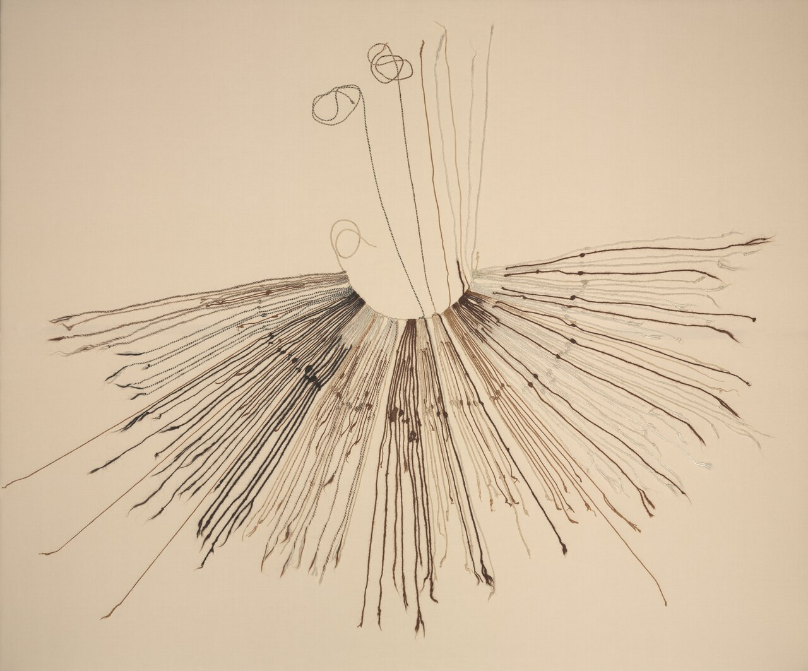
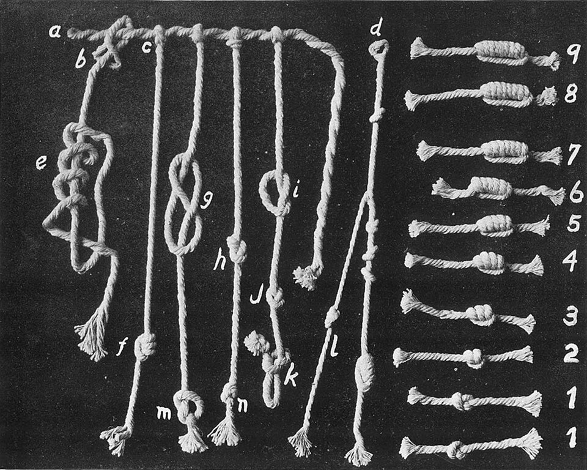
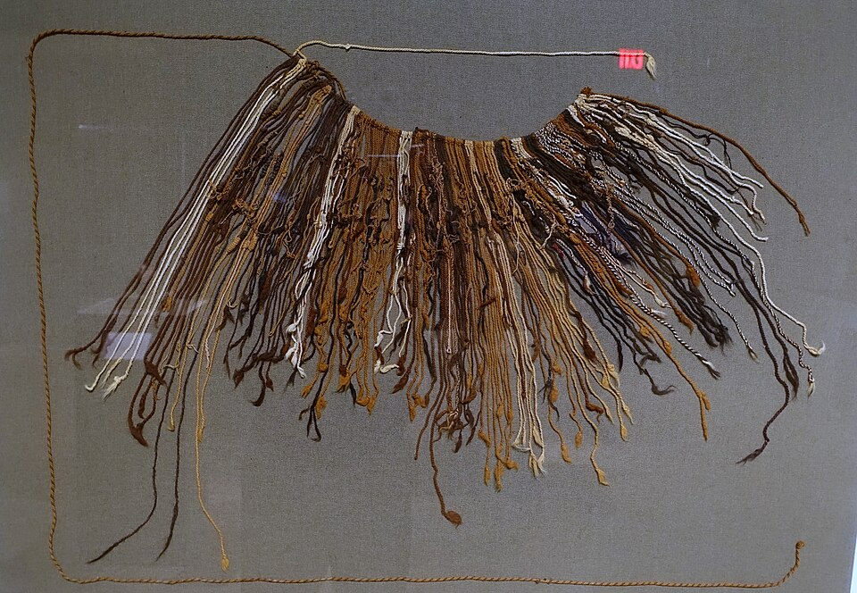
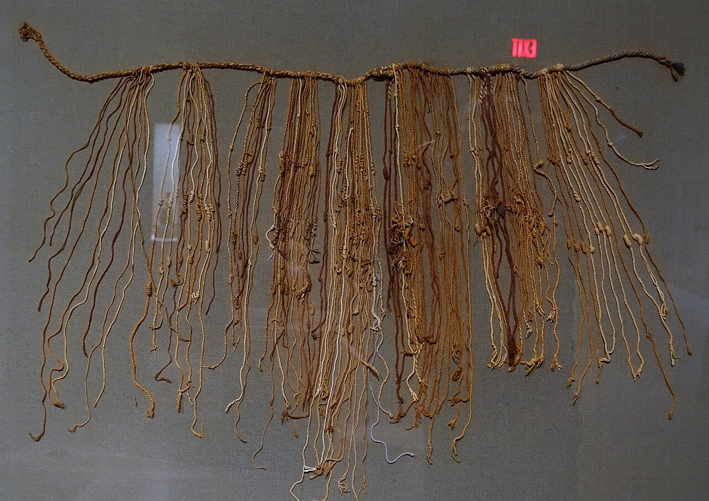
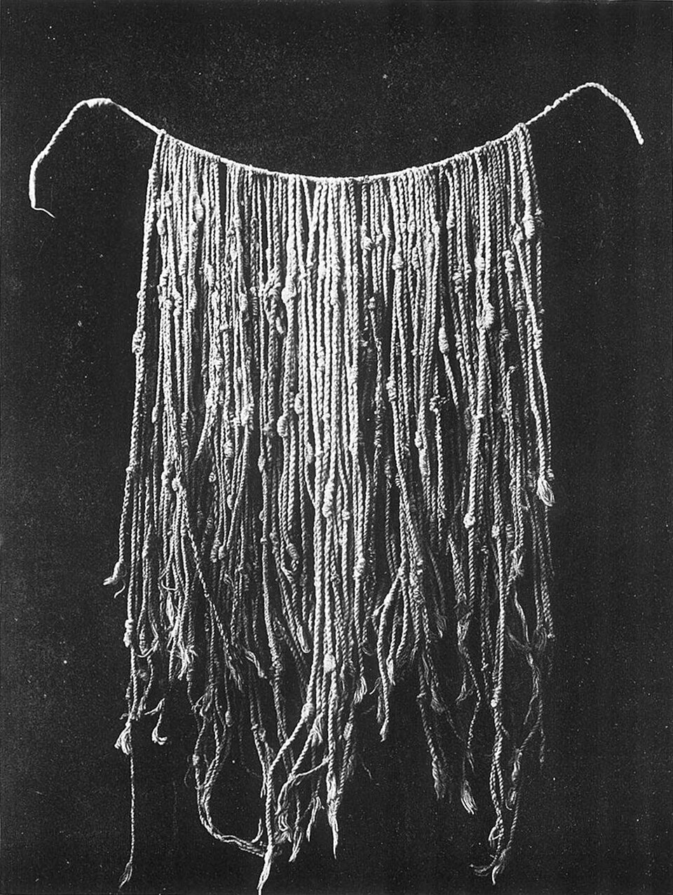
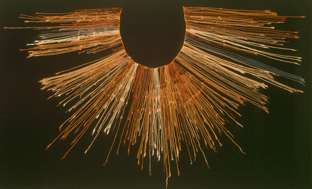
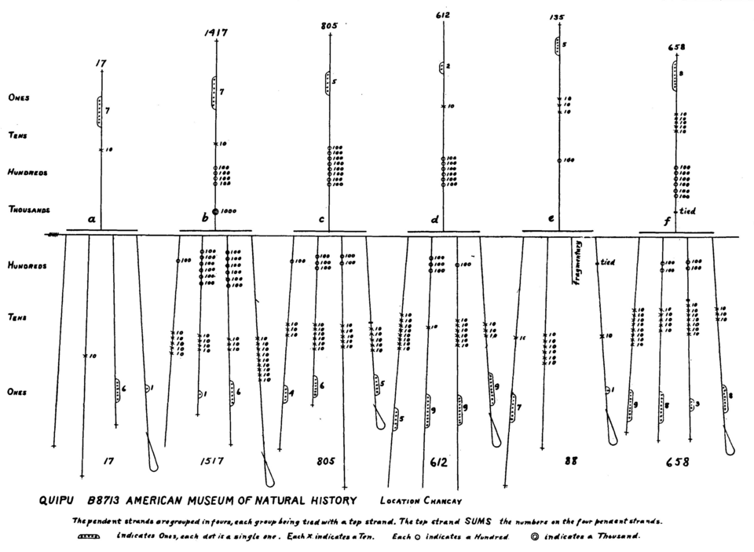

Raíces eternas: el Munarq vuelve a abrir con quipus
La muestra del Museo Nacional de Arqueología incluye cordeles, nudos y colores usados para información y contabilidad. Habla el arqueólogo Rubén Mamani.
Un quipu es un registro de cordeles, colores y nudos. La palabra viene del quechua y significa nudo. El imperio inca, que abarcó parte de lo que hoy es Bolivia, los usó para cuentas, censos y tributos. En La Paz siguen en los museos y, en el altiplano, todavía hay quien cuenta el ganado así.

El sistema
No hay letras. De un cordón principal cuelgan otros, y a veces de esos cuelgan más. Cambia el color, el sentido en que se tuerce la fibra, el lugar del nudo y la clase de nudo. Quien sabía leerlos era el quipucamayoc.
Una parte de esos registros ya se entiende como números: unidades, decenas, centenas y millares, según la altura del nudo. Otra parte, la que no es una cuenta, sigue en estudio.


En Bolivia
El Museo Nacional de Arqueología, en La Paz, reabrió el 5 de julio de 2026. En la muestra «Raíces eternas, legados vivos» hay quipus. El arqueólogo Rubén Mamani los describió como cordeles, nudos y colores para guardar información y llevar cuentas. El museo funciona desde 1846 y está en el Palacio de Tiahuanaco desde 1919.
En agosto de 2025 el MUSEF abrió «Jallp’a Mama Kawsan». Un quipu inca se exhibió junto a libros de catecismo: la memoria anudada al lado del libro que vino a ocupar su lugar. Milton Eyzaguirre explica esa lectura en la nota del museo.
Un inventario de 2017 anota tres quipus entre las piezas del Museo Nacional de Arqueología. Y un estudio publicado en La Paz cuenta que en Chijiphina y Cocotani, provincia Omasuyos, todavía se registran llamas y ovejas con cordeles de colores.
El registro del Museo Nacional de Arqueología, en La Paz, incluye tres quipus.
«Jallp’a Mama Kawsan» muestra un quipu inca junto a los catecismos que reemplazaron esa memoria.
El museo reabre. La muestra «Raíces eternas, legados vivos» vuelve a poner quipus en sala.
Las fotos son quipus de archivo y láminas de estudio, no las imágenes de cada nota. Cada tarjeta abre la fuente.

Brújula DigitalLa muestra del Museo Nacional de Arqueología incluye cordeles, nudos y colores usados para información y contabilidad. Habla el arqueólogo Rubén Mamani.

ABC ColorABC publica el cable de la reapertura del Munarq y de la muestra de patrimonio prehispánico, quipus incluidos.

MUSEFEn «Jallp’a Mama Kawsan» el museo pone el quipu al lado de los libros que sustituyeron la memoria indígena. La nota es de Milton Eyzaguirre.

National GeographicUna explicación del archivo inca: color, posición y tipo de nudo. El territorio de ese imperio incluye parte de la Bolivia de hoy.